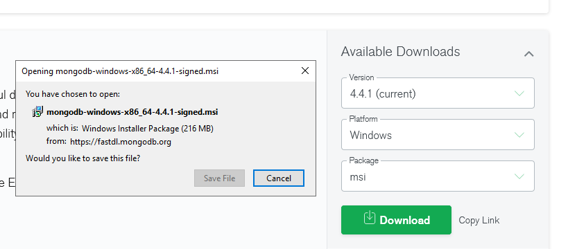
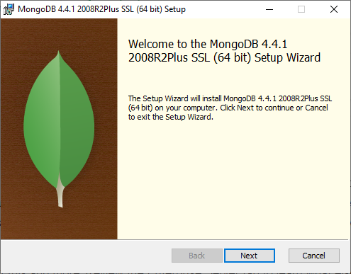
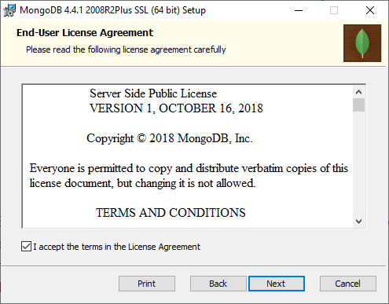
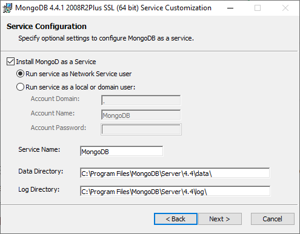
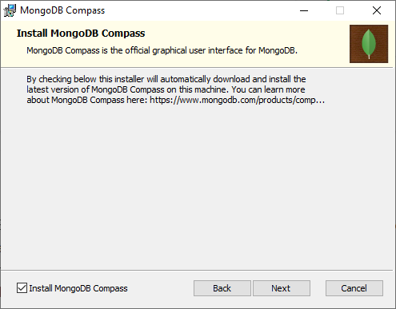
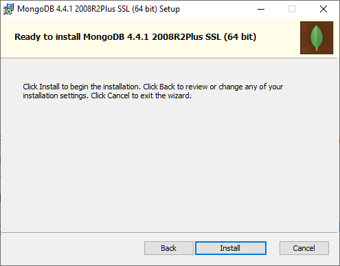
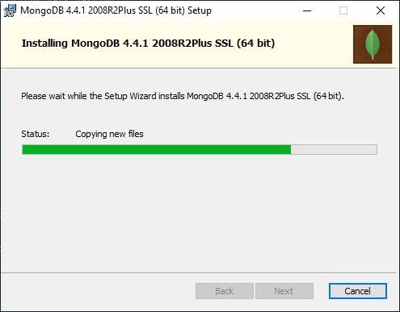
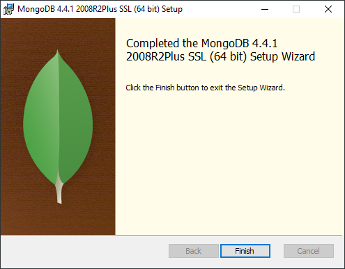
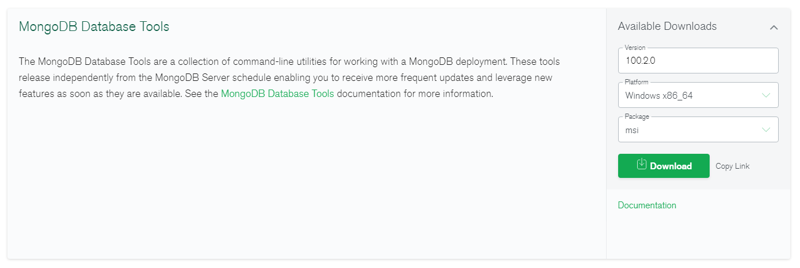

MongoDB Installation
By default, the Wayk Bastion PowerShell module creates MongoDB container and a Docker volume to store its data. While this may be good enough for most, a regular MongoDB installation is preferable, especially if high availability is required.
MongoDB Server
Download the MongoDB .msi installer for Windows.

Launch the .msi installer, then click Next.

Accept the license agreement, then click Next.

Leave the default options, then click Next.

If you wish to install MongoDB Compass, check "Install MongoDB Compass", then click Next. While it is a very convenient MongoDB GUI, it can take several minutes to install.

Click Install to begin the installation.

Wait for the installation to complete. If you selected MongoDB Compass, it will take a few minutes, so be patient.

Click Finish to complete the installation.

That's it, you should now have a "MongoDB" system service started automatically, with files stored under "C:\Program Files\MongoDB\Server\4.4\bin".
Network Configuration
Once the MongoDB server is installed, a few configuration settings need to be tweaked to make it usable from the containers. Open the mongod.cfg configuration file located inside the 'bin' directory of the MongoDB server with a text editor, then look for the following section:
# network interfaces
net:
port: 27017
bindIp: 127.0.0.1
Change 'bindIp: 127.0.0.1' to 'bindIpAll: true', then save the changes:
# network interfaces
net:
port: 27017
bindIpAll: true
Restart the MongoDB service for the changes to be applied:
Restart-Service MongoDB
This change is necessary because Windows container use a special network interface to communicate with the host.
MongoDB tools
In order to perform MongoDB management on the host, you will need to install the MongoDB management tools.
chocolatey
You can install the MongoDB database tools with chocolatey:
choco install mongodb-database-tools
This is the recommended installation method, as it automatically adds to the tools to the system PATH.
.msi installer
Download the .msi installer or equivalent package for your platform:

Once installed, the tools should be located in directory that looks like "C:\Program Files\MongoDB\Tools\100\bin". You will need to add it to your system PATH before invoking the tools.
Migrating to an external database
If you have been using the internal database automatically created as a Windows container, follow these steps to migrate your data and switch to the new MongoDB database server.
Enter-WaykBastion -ChangeDirectory
Stop-WaykBastion
$BackupFile = "bastion-backup-$(Get-Date -Format 'FileDateUniversal').tgz"
Backup-WaykBastionData -BackupPath ".\${BackupFile}"
Make sure that the backup file was correctly created:
PS > Get-Item $BackupFile
Directory: C:\ProgramData\Devolutions\Wayk Bastion
Mode LastWriteTime Length Name
---- ------------- ------ ----
-a---- 11/6/2020 12:54 PM 40254 bastion-backup-20201106Z.tgz
Then make sure that the 'mongorestore' command is available on the host:
PS > [bool]$(Get-Command mongorestore)
True
If the command cannot be found, install the MongoDB database tools and modify your system PATH environment variable to include them.
We are now ready to try restoring the database contents into the new MongoDB database server running on the host. Make sure that the MongoDB system service is up and running:
PS > Get-Service MongoDB
Status Name DisplayName
------ ---- -----------
Running MongoDB MongoDB Server (MongoDB)
Run the 'mongorestore' command using the previous backup file, and the destination MongoDB server:
mongorestore --drop --gzip --archive=$BackupFile --uri mongodb://localhost:27017
While 'localhost' works on the host, it won't work inside containers: instead, you need to use the explicit host name or IP address of the MongoDB host. We will use the hostname 'MongoHost' but it needs to be replaced by the real name of your host to work within Wayk Bastion containers:
$MongoHost = "MongoHost"
Stop-WaykBastion
Set-WaykBastionConfig -MongoExternal $True -MongoUrl "mongodb://${MongoHost}:27017"
Start-WaykBastion
If the 'den-mongo' container was not stopped prior to the configuration change, it may still be running. You can stop it with "docker stop den-mongo" if it is the case. If everything worked well, all containers expect 'den-mongo' should be up and running.
If some containers failed to started due to MongoDB connection errors, verify the following:
- The MongoUrl parameter points to a reachable host where the MongoDB server is running
- The MongoDB server configuration file (mongod.cfg) was modified with 'bindIpAll: true'
- The firewall is not blocking connections on TCP/27017 in between containers and the host
Otherwise, congratulations: Wayk Bastion is now correctly configured to use an external MongoDB server!